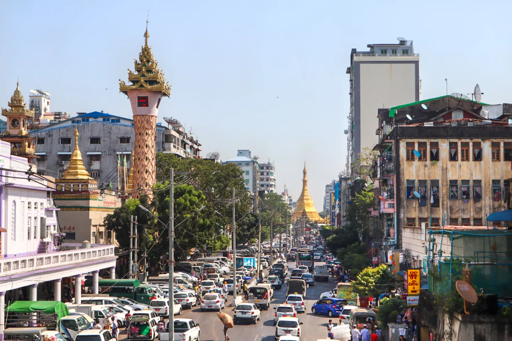

Bago was formerly known as Hanthawaddy. The population of Bago is only 248,899. There is
a palace in Bago called Kanbawzathadi it was built in 1556 but unfortunately it
was burned down in 1559.It was reconstructed in 1990 and finished in 1992.
#4 Mawlamyine
Mawlamyine is the fourth-largest city in Myanmar (Burma).at the mouth of Thanlwin (Salween) River. Mawlamyine was an ancient city and the first capital of British Burma.
The city is currently the main trading centre and seaport in south eastern Myanmar.
#3 Naypyidaw
Naypyidaw is one of the most famous places in myanmar and also the capital of myanmar. Naypyidaw a population of 924,608. Most famous places in Naypyidaw are
Uppatasanti Pagoda, Water Fountain Garden, Ministry Zone, Gems Museum, Union Parliament.
#2 Mandalay
Mandalay is the second largest city in myanmar after Yangon. There are over 700 pogadas in Mandalay.
It is also a place where the Mandalay palace is located. The Mandalay palace was built in 1857 and finish
in 1859. The population of Mandalay is over 1.5 million
#1 Yangon

Yangon is formerly spelled as Rangoon. It is the largest city in Myanmar.
It served as the capital city of Myanmar until 2006, when military goverment relocated the capital city into Nyapyidaw